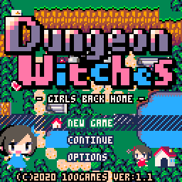
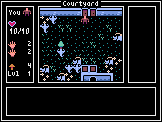

Pyxel User Examples
Works made with
Pyxel
. Please share yours
here
!
◀
219-202
201-184
183-166
165-148
147-130
129-112
111-94
93-76
75-58
57-40
39-22
21-4
3-1
▶
#3 GRASLAY
by
Ontake44
|
Site
A side-scrolling shoot-em-up

#2 Dungeon Witches
by
doc1oo (1oo_Games)
|
Site
A roguelite game

#1 30 Seconds of Daylight
by
Adam
|
Site
A roguelike game and 1st Pyxel Jam winner
◀
219-202
201-184
183-166
165-148
147-130
129-112
111-94
93-76
75-58
57-40
39-22
21-4
3-1
▶